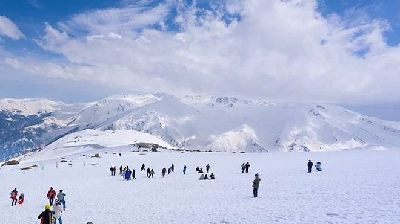
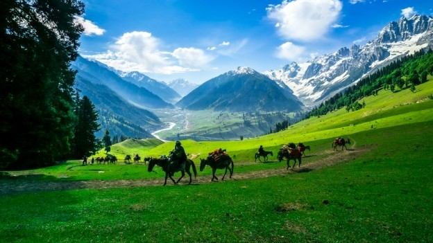
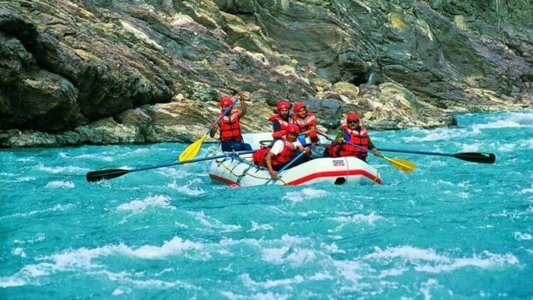
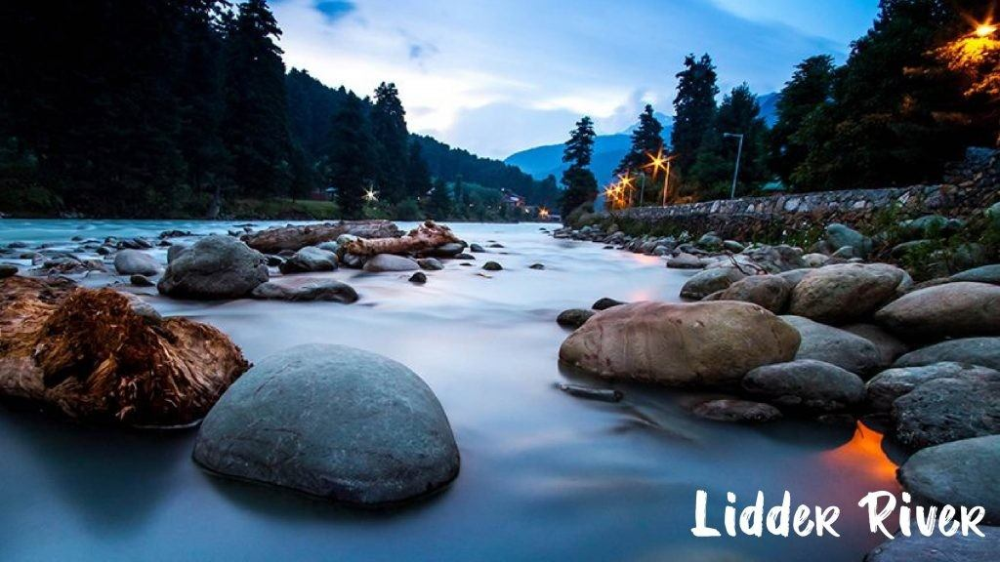
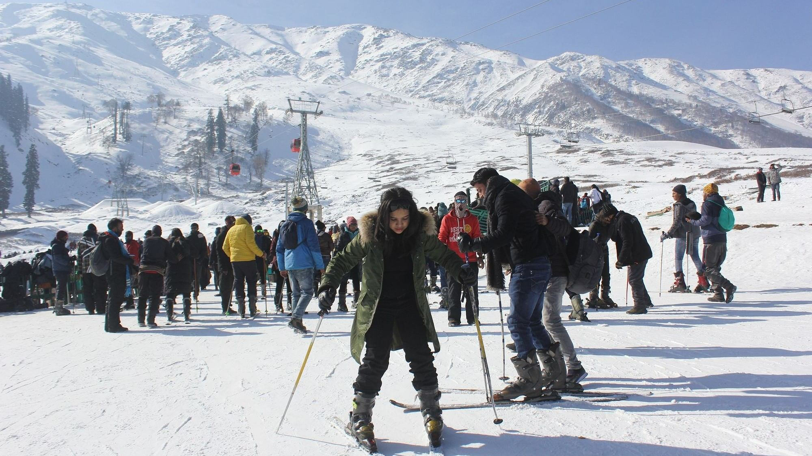
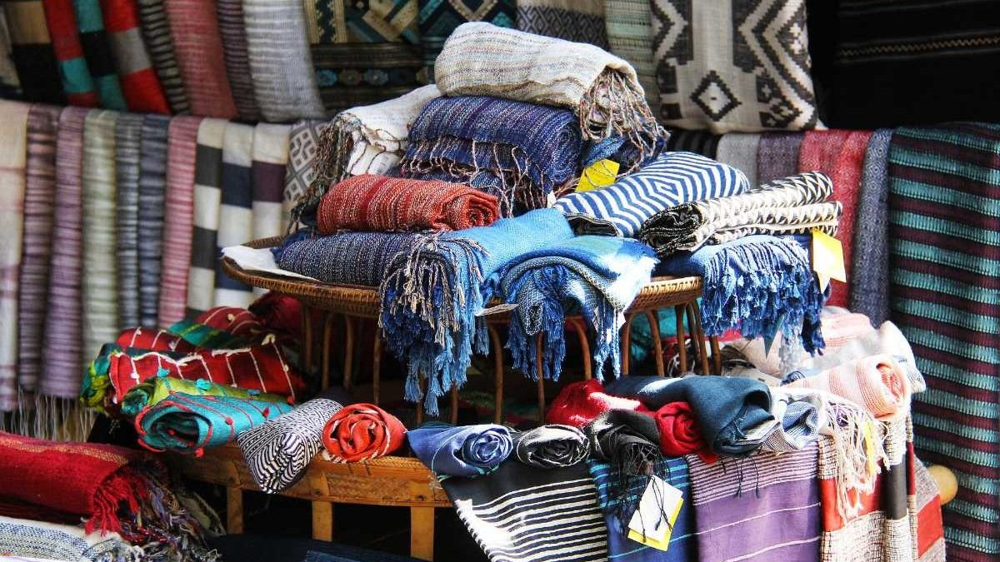
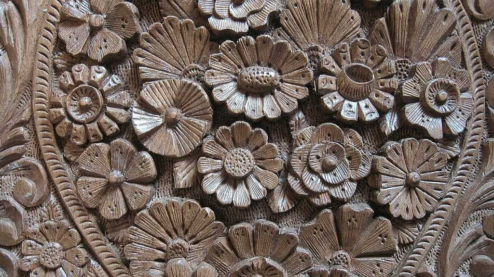
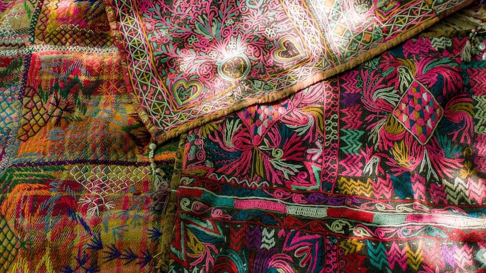
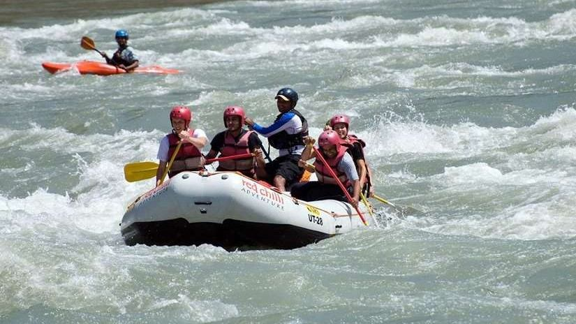

Your Kashmir tour package begins upon your arrival at Srinagar airport/station. Upon arrival, you'll be greeted by our tour representative and provided with assisted transfer to your hotel/houseboat. The remainder of the day is free for leisure. You can spend your time at the houseboat/hotel or opt for a Shikara ride at Nehru Park. Later, return to the hotel/houseboat for an overnight stay.
After breakfast, embark on a sightseeing tour of Srinagar. Visit the renowned Mughal Gardens, showcasing the pinnacle of Mughal garden architecture and floral design, commissioned by Shah Jahan. Explore the gardens, indulge in photography, and enjoy the serene ambiance. Return to your houseboat or hotel for an overnight stay.
Start your day with breakfast and proceed on a short road trip from Srinagar to Gulmarg. Upon arrival, immerse yourself in the breathtaking natural beauty of Gulmarg, featuring shimmering lakes, pristine rivers, vast meadows, snow-clad mountains, and pine-scented slopes. Enjoy an overnight stay at a hotel in Gulmarg.
Check out early and receive assisted transfer to Pahalgam, known as the "valley of shepherds". En route, make a stop at Awantipura Ruins and Anantnag Sulphur Springs. Spend the night at a hotel in Pahalgam.
After breakfast, visit Chandanwadi, a picturesque snow point located about 14 km from Pahalgam. Enjoy a pony ride and explore the countryside, taking leisurely walks, and relaxing by the banks of River Lidder. Return to your hotel in Pahalgam for an overnight stay.
After breakfast, visit Chandanwadi, a picturesque snow point located about 14 km from Pahalgam. Enjoy a pony ride and explore the countryside, taking leisurely walks, and relaxing by the banks of River Lidder. Return to your hotel in Pahalgam for an overnight stay.
Enjoy your final breakfast in Kashmir. Complete the check-out formalities at the hotel and receive assisted transfer to the Airport/Station for your journey back home, marking the end of your 7-day Splendors of Kashmir tour.